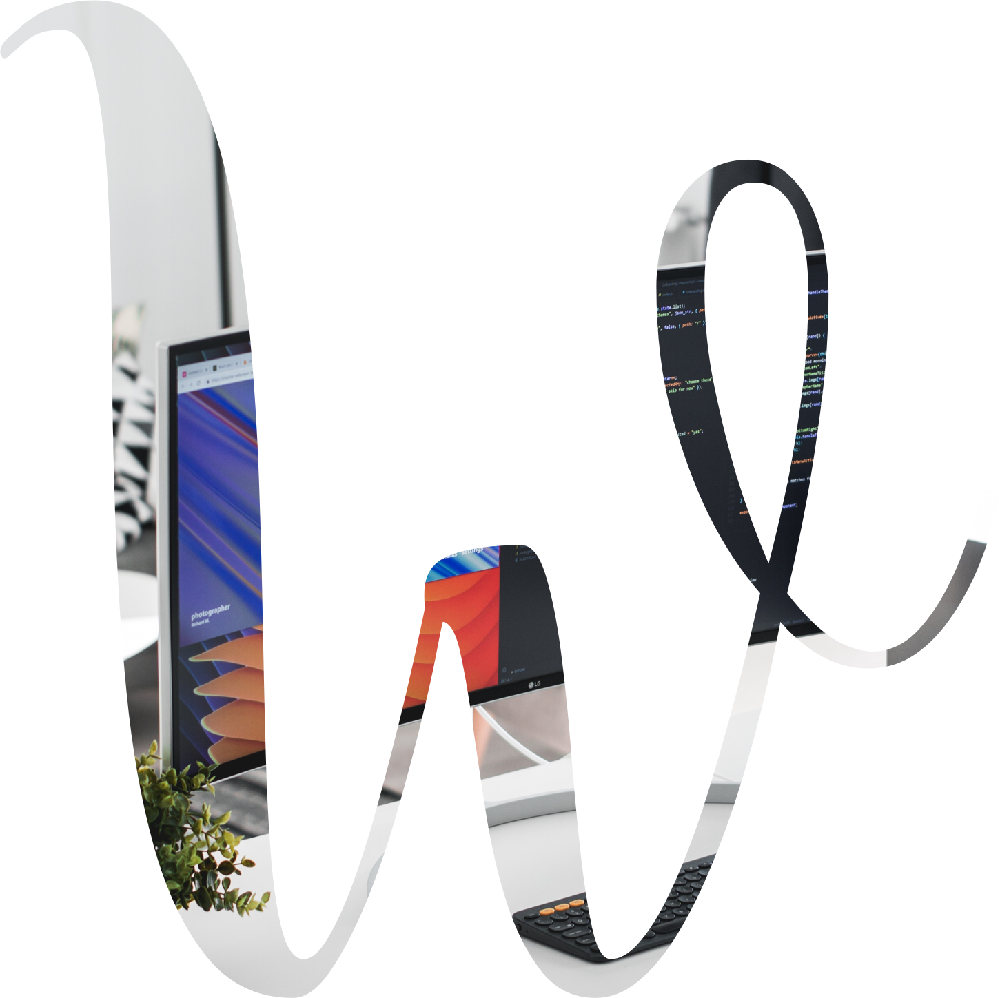
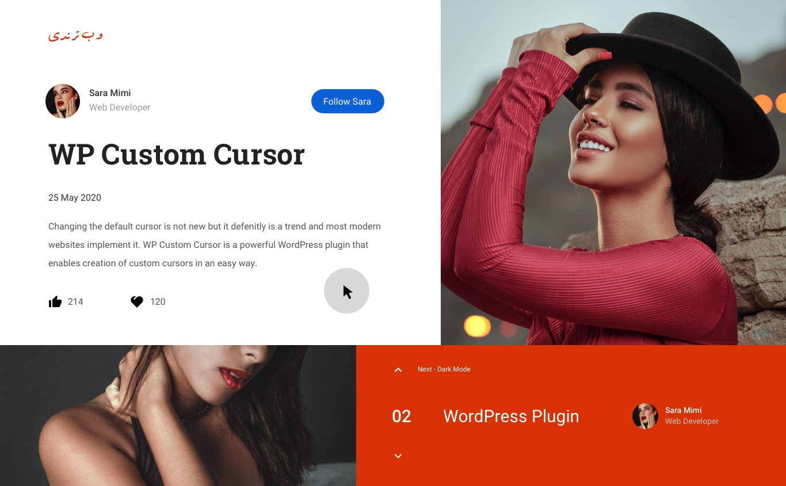

Creative Cursors Pack
WP Custom Cursor 2.2
Users are hungry for creativity and this WordPress plugin can satisfy their needs!
Develper Words:
Changing the default cursor is not new but it defenitly is a trend and most modern websites implement it. WP Custom Cursor is a powerful WordPress plugin that enables creation of custom cursors in an easy way.
Compatible with
WordPress 5.4
WordPress 5.4

Compatible with
almost any theme
almost any theme
Trendy & New
Custom cursor is one of the latest trends on the web.
Fast Performance
In a normal case a 5 second run only takes 400ms time of processing power.
Customizable
Customize your cursor by changing width, color, blending mode, etc.

Make Your Site Fabulous!
Cursors:
Cursor 01
HTML Cursor 1
Cursor 02
HTML Cursor 2
Cursor 03
HTML Cursor 3
Cursor 04
HTML Cursor 4
Cursor 05
HTML Cursor 5
Cursor 06
HTML Cursor 6
Cursor 07
HTML Cursor 7
Cursor 08
HTML Cursor 8
Cursor 09
HTML Cursor 9
Cursor 10
HTML Cursor 10
Cursor 11
HTML Cursor 11
Cursor 12
HTML Cursor 12
Cursor 13
HTML Cursor 13
Cursor 14
HTML Cursor 14
Cursor 15
HTML Cursor 15
Cursor 16
HTML Cursor 16
Cursor 17
HTML Cursor 17
Cursor 18
HTML Cursor 18